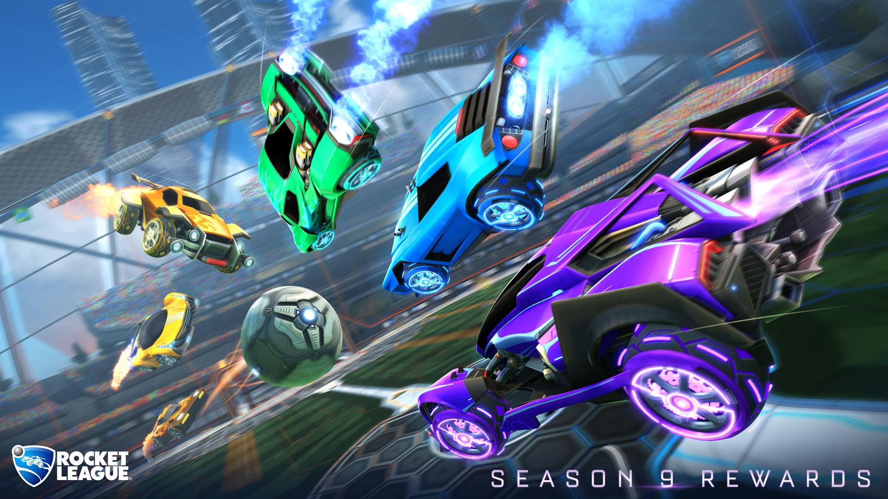

Rocket League este un joc video cu masini care joaca fotbal dezvoltat și publicat de Psyonix. Jocul a fost lansat pentru prima dată pentru Microsoft Windows și PlayStation 4 în iulie 2015, porturile pentru Xbox One și Nintendo Switch fiind lansate mai târziu. În iunie 2016, 505 Jocuri au început să distribuie o versiune fizică de vânzare cu amănuntul pentru PlayStation 4 și Xbox One, Warner Bros.Interactive Entertainment preluând aceste sarcini până la sfârșitul anului 2017. Versiunile pentru macOS și Linux au fost lansate și în 2016, dar suport pentru serviciile online au fost renunțate în 2020. Jocul a devenit gratuit în septembrie 2020.
Gameplay: Descrisă drept „fotbal, dar cu mașini tip racheta”, Rocket League are până la opt jucători repartizați fiecăreia dintre cele două echipe, folosind vehicule cu propulsoare pentru a lovi o minge în poarta adversarului și a obține puncte pe parcursul unui meci. . Jocul include moduri single-player și multiplayer care pot fi jucate atât la nivel local, cât și online, inclusiv jocuri pe mai multe platforme între toate versiunile. Actualizările ulterioare ale jocului au permis posibilitatea de a modifica regulile de bază și au adăugat noi moduri de joc, inclusiv cele bazate pe hochei pe gheață și baschet.
Rocket League este o continuare a lui Psyonix's Supersonic Acrobatic Rocket-Powered Battle-Cars, un joc video din 2008 pentru PlayStation 3. Battle-Cars a primit recenzii mixte și nu a fost un succes, dar a câștigat o bază loială de fani. Psyonix a continuat să se susțină prin lucrări de dezvoltare a contractelor pentru alte studiouri în timp ce urmărea să dezvolte o continuare. Psyonix a început dezvoltarea formală a Rocket League în jurul anului 2013, rafinând gameplay-ul de la Battle-Cars pentru a aborda criticile și contribuția fanilor. De asemenea, Psyonix și-a recunoscut lipsa de marketing de la Battle-Cars și s-a angajat atât în social media, cât și în promoții pentru comercializarea jocului, inclusiv oferirea jocului gratuit pentru membrii PlayStation Plus la lansare.
Rocket League a fost lăudat pentru îmbunătățirile sale de joc față de Battle-Cars, precum grafica și prezentarea generală, deși unele critici au fost îndreptate către motorul fizic al jocului. Jocul a câștigat o serie de premii din industrie și a înregistrat peste 10 milioane de vânzări și 40 de milioane de jucători până la începutul anului 2018. Rocket League a fost adoptată și ca esport, jucători profesioniști participând prin ESL și Major League Gaming împreună cu propriul Rocket al lui Psyonix. Seria Campionatului Ligii (RLCS).